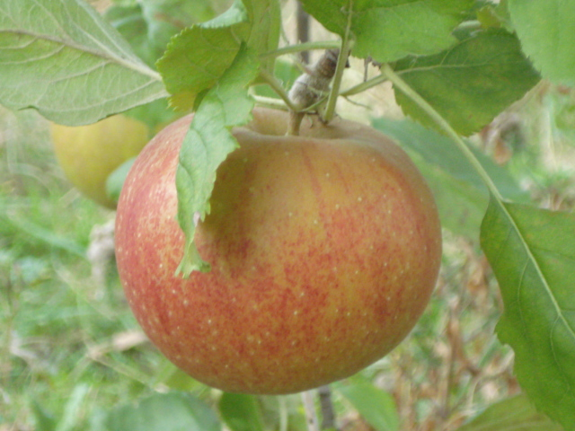
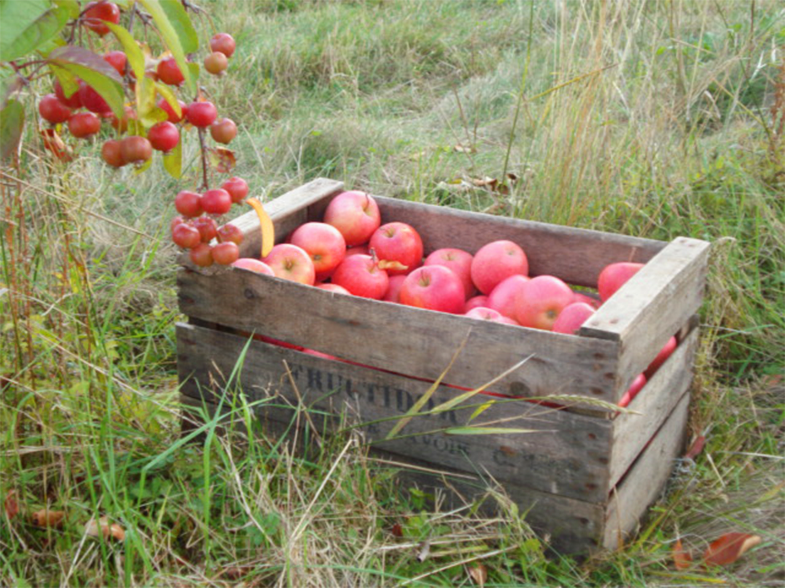
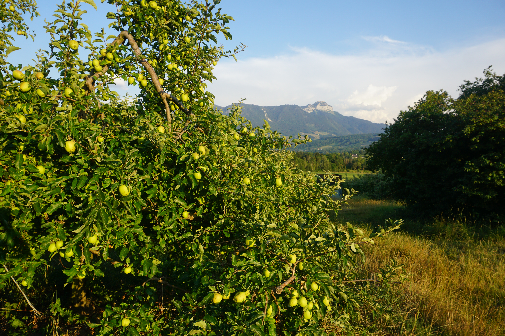

Belle de Boskoop
Chair proche de la Reinette, tendre et acidulée à maturité. Gonfle à la cuisson
CUEILLETTE AUX VERGERS
Ouverture : 24 septembre
POMMES :
1,20 €/Kg
JUS DE POMMES : 2,40 €/L
→ à partir de fin octobre
Petite récolte à cause du temps


C'est dans un esprit de culture «intégrée» que nous concevons notre métier d'arboriculteur depuis très
longtemps, tout en essayant continuellement de progresser.
Mieux connue en Suisse ou en Allemagne, cette méthode de culture, intègre et privilégie tous les
facteurs qui visent à une bonne santé du sol, de l'arbre, et donc un fruit de qualité, dans le respect de
l'environnement et du consommateur.
Le sol est vivant et colonisé par une flore et une microfaune très nombreuses qui participent à
notre méthode de culture et que nous devons donc protéger :
- Nous laissons le sol enherbé. Les racines des herbes vivent, puis sèchent en hiver, créant des canaux qui
permettent le drainage de l'eau, la pénétration de l'air en profondeur, un effet dépolluant et une réduction
de l'effet de la sécheresse par évaporation et un moindre tassement du terrain par les véhicules.
Ces racines peuvent aussi, grâce à des acides organiques qu'elles sécrètent, attaquer le sous-sol (argiles,
roches) et donc apporter à l'arbre une partie des sels minéraux dont il a besoin.
- Nous n'utilisons pas d'engrais, la culture intégrée le rend inutile, et ceci d'autant plus que le broyage
sur place de l'herbe et du bois de taille apportent déjà de la matière organique qui se composte
rapidement.
- L'utilisation de capsules de perturbateurs à phéromone permet de ne pas subir les vers du fruit.
Les auxiliaires de culture jouent également un rôle très important :
- les vers de terre brassent et améliorent le sol.
- les thyphlodromes, acariens de 0,5mm, que nous avons introduits dans les vergers depuis plus de 20 ans,
détruisent les araignées nuisibles. Ils évitent ainsi les traitements contre des pullulations d'araignées
rouges qui sucent la sève.
- un apiculteur laisse ses ruches à proximité d'une de nos parcelles d'arbres, les abeilles assurent une
bonne pollinisation. C'est un autre exemple de réciprocité que permet cette méthode de culture.
Bien que fragiles et très sensibles, ces auxiliaires sont toujours présents dans les vergers. La
culture intégrée contribue à leur préservation.
Les insectes ravageurs qui s'attaquent aux pommes et pommiers sont aussi présents en
permanence. Mais les auxiliaires s'en nourrissent et subsistent donc grâce à ces ravageurs.
Un équilibre s'installe, ces ravageurs ne dépassant pas le seuil au-delà duquel leurs
dégâts seraient préjudiciables.
Cette méthode est aussi respectueuse des multiples espèces vivant hors sol : elle leur permet souvent de se
neutraliser et donc de diminuer une prolifération, voire d'annuler une attaque qui serait favorisée si la
diversité de la microfaune était moins importante.
C'est donc seulement si un ravageur ou un parasite dépasse le « seuil de tolérance », donc en dernier
recours, que l'on envisage un traitement. Celui-ci sera bio ou alors le moins perturbant possible.
La lutte contre le ver de la pomme (carpocapse) se fait à l'aide de phéromones (lutte biologique).
Nous apportons des oligo-éléments via un concentré d'algues utilisé en Agriculture Biologique.
La tavelure (champignon microscopique) qui s'attaque aux feuilles et aux pommes est le seul nuisible des
vergers qui nécessite un traitement phytosanitaire classique (6 traitements par an sur Golden, Jonagold et
Jonagored, 3 traitements sur Elstar, Pinova et Idared, 2 sur Belle de Boskoop).
D'autres produits utilisés en agriculture biologique tels que le cuivre ou le soufre sont également utilisés
comme fongicides en complément.
Ces traitements sont uniquement effectués d'avril à juillet sur feuillage et petits fruits.
Nous renouvelons aussi les vergers avec des variétés récentes mais plus rustiques et nécessitant donc moins
de traitements.
Par ailleurs, les personnes qui viennent cueillir des pommes dans nos plantations sont moins sensibles aux
défauts d'aspect, nous pouvons donc aller encore plus loin dans ce type de culture.

Pour toute question concernant les vergers, la cueillette ou les pommes :